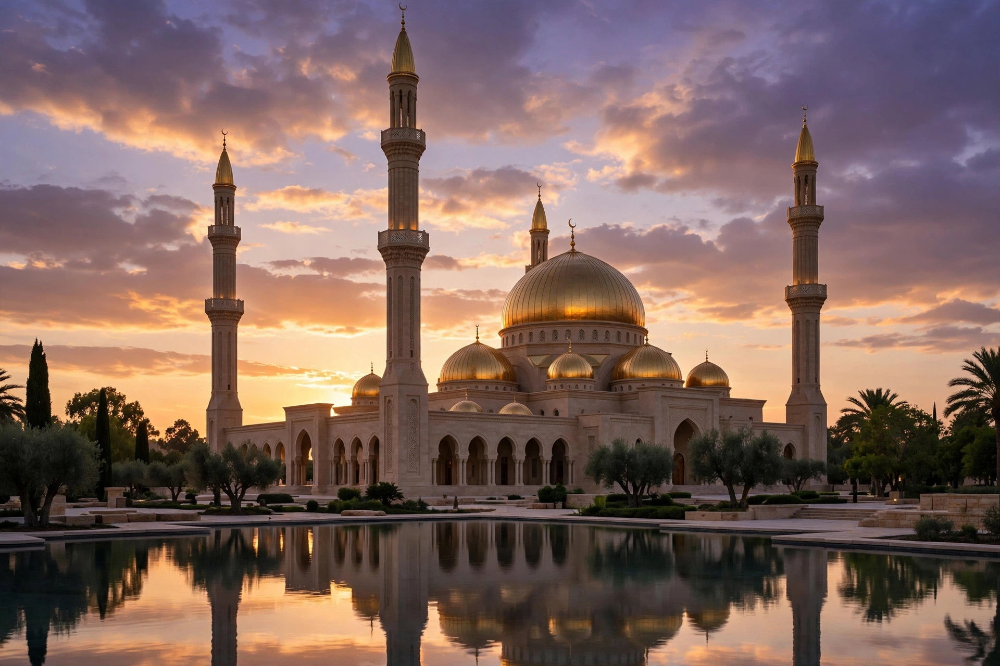

Ask any PPSC topper which subject gave them the easiest marks: Islamiat. In almost every one-paper exam — PPSC, FPSC, NTS, OTS, CTS — Islamiat appears as a fixed block of the paper. And unlike Current Affairs, which changes every month, Islamiat questions come from a closed set of facts that barely change year to year — learn them once, use them forever.
Yet most aspirants treat Islamiat as an afterthought. That is the mistake that separates qualifiers from everyone else — because the answers are either in your memory or they aren't, a prepared candidate sweeps this section in minutes. This guide shows you which Islamiat topics carry marks, and how to prepare them fast.
Why Islamiat Has the Best Return on Effort
Think of your preparation time as an investment. Current Affairs needs constant updating, English grammar needs weeks of rules, and mathematics punishes slow calculators. Islamiat is the opposite — the highest return per hour you spend:
- The syllabus is fixed. The same facts about the Quran, Seerah, Ghazwat and Khulfa-e-Rashideen appear again and again.
- Questions repeat heavily. Five years of past papers show the same Islamiat questions returning in rephrased form — our solved past papers prove the pattern.
- It is pure memory — no tricks. Either you know the answer or you don't, which makes MCQ practice brutally effective.
- Every exam tests it. Whether PPSC or FPSC, or NTS — prepare it once and use it everywhere.

The Holy Quran — The Heaviest Topic
If there is one area where examiners love to test depth, it is the Holy Quran. Memorize these cold — they are the closest thing to guaranteed marks:
- 114 surahs and approximately 6,236 verses — the two most-asked numbers.
- First revelation: the first five verses of Surah Al-Alaq, in the Cave of Hira near Makkah.
- Longest surah: Al-Baqarah. Shortest surah: Al-Kawthar.
- Makki surahs were revealed in Makkah before the Hijrah; Madni surahs in Madinah after it.
- Compilation was ordered under Hazrat Abu Bakr (RA); standardized copies were prepared under Hazrat Usman (RA).
Read the list once, then test yourself with our free Islamiat MCQs. Every fact you miss is your real syllabus.
Seerah of the Prophet Muhammad (PBUH) — The Timeline Questions
Seerah questions test the Prophet's (PBUH) life in the right order. Lock these milestones into memory:
- Born 570 CE (Year of the Elephant) in Makkah; father Hazrat Abdullah, mother Hazrat Amina, grandfather Hazrat Abdul Muttalib, uncle Hazrat Abu Talib who raised him.
- First revelation at age 40 in the Cave of Hira.
- Hijrah to Madinah in 622 CE — the start of the Islamic calendar.
- Passed away in 11 AH in Madinah; buried in Masjid-e-Nabawi.
- First wife Hazrat Khadijah (RA) — the first woman to accept Islam.
Write the Seerah as a one-page timeline and revise it five minutes each morning for a week.
Ghazwat and Key Battles — The Examiner's Favourite
A Ghazwa is a battle the Prophet (PBUH) himself joined; a Sariya was led by his companions. Total Ghazwat are commonly cited as 27:
- Badr — 2 AH: the first major battle; 313 Muslims faced a much larger army.
- Uhud — 3 AH: Hazrat Hamza (RA) was martyred here.
- Khandaq (the Trench) — 5 AH: the trench strategy was suggested by Hazrat Salman Farsi (RA).
- Conquest of Makkah — 8 AH: a nearly bloodless victory with a general amnesty.
- Tabuk — 9 AH: the last major expedition.
- Hajjat-ul-Wida — 10 AH: the Prophet's only Hajj and Farewell Sermon. Also Sulh-e-Hudaibiya (6 AH).
Khulfa-e-Rashideen — The Order Always Matters
Questions on the four rightly-guided caliphs almost always test order, period, and titles. Memorize them as a sequence:
- Hazrat Abu Bakr (RA) — 11 to 13 AH: titled As-Siddiq; the Quran's compilation began under him.
- Hazrat Umar (RA) — 13 to 23 AH: titled Al-Farooq; massive expansion of the Islamic state.
- Hazrat Usman (RA) — 23 to 35 AH: titled Zun-Noorain; standardized the Quranic text.
- Hazrat Ali (RA) — 35 to 40 AH: the fourth caliph, renowned for his knowledge and judgments.
Study the caliphs in order — mixing them up is where candidates lose easy marks.
Pillars, Fiqh Basics and Famous "Firsts"
Short, clean facts that make perfect MCQ material:
- Five pillars of Islam: Shahadah, Salah, Zakat, Sawm, Hajj.
- Six articles of faith (Iman): Allah, His angels, His books, His messengers, the Last Day, and divine decree.
- Zakat is 2.5% of savings held one lunar year; ordained in 2 AH — the same year fasting was ordained and the Qibla changed to the Kaaba. Hajj was ordained in 9 AH; Salah on the night of Mi'raj.
- First woman to accept Islam: Hazrat Khadijah (RA). First martyr: Hazrat Sumayyah (RA). First muezzin: Hazrat Bilal (RA).
- Hazrat Hamza (RA): Sayyid-ush-Shuhada. Hazrat Khalid bin Walid (RA): Saifullah.
- 711 CE: Tariq bin Ziyad enters Spain. Baghdad founded by Abbasid caliph Al-Mansur; four Fiqh imams: Abu Hanifa, Malik, Shafi'i, Ahmad ibn Hanbal; most authentic hadith books: Sahih Bukhari and Sahih Muslim.
How to Study Islamiat the Smart Way
- MCQ-first, always. Read a topic once, then immediately attempt 50–100 MCQs on it. Islamiat practice on this site is free and covers every cluster above.
- One notebook only. Every fact you get wrong goes into a single error notebook with its explanation. This notebook — not any book — is what you revise in the final week.
- Spaced repetition. Revise each cluster after 1 day, 3 days, and 7 days. Islamiat facts fade fast without this rhythm.
- Read every option. Examiners often flip a wrong option from one question into the right answer of another.
A 7-Day Islamiat Crash Plan
About 2 hours a day covers every high-scoring cluster in one week:
- Day 1: The Holy Quran. Day 2: Seerah timeline. Day 3: Ghazwat and battles.
- Day 4: Khulfa-e-Rashideen. Day 5: Pillars, Fiqh basics, firsts.
- Day 6: Islamic history landmarks. Day 7: 200 mixed MCQs, then read your error notebook twice.
3 Mistakes That Waste Your Islamiat Marks
- Reading books instead of solving MCQs. Islamiat is fact-recall — every hour re-reading chapters is an hour not spent on the actual exam format.
- No error notebook. Without one, you repeat the same wrong answers in the real paper. The notebook is the difference between "I studied Islamiat" and "I score in Islamiat."
- Ignoring repeated questions. Toppers study what repeats. Solve past papers first, and let the repeat pattern tell you what matters most.
- Islamiat offers the best return on study time: a fixed, repeat-heavy fact set common to PPSC, FPSC and NTS papers.
- Highest-scoring clusters: the Holy Quran, Seerah timeline, Ghazwat years, Khulfa-e-Rashideen order, pillars & Fiqh basics, and famous firsts.
- Study MCQ-first, keep one error notebook, and revise on a 1-3-7 day rhythm.
- A focused 7-day plan can cover the entire high-yield Islamiat syllabus.
Frequently Asked Questions
How many days are enough to prepare Islamiat for PPSC?
Two focused hours a day covers every cluster in 7 days — 10–12 days if your basics are weak.
Do Islamiat questions really repeat in PPSC and FPSC exams?
Yes — Islamiat has one of the highest repeat rates of any section, which is why past-paper practice is so effective here.
Which Islamiat topic carries the most marks?
The Holy Quran and the Ghazwat/battles cluster produce the most questions, followed by Seerah.
Where can I practice free Islamiat MCQs online?
Right here on MCQs Tayyari — our free Islamiat practice section covers every cluster above, plus a full exam simulator with timer and negative marking.
Start practicing — free, no login needed
195,477+ MCQs · solved past papers · real exam simulator with timer & negative marking